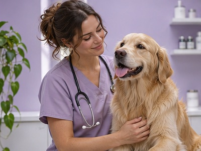
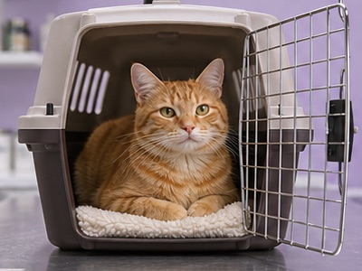
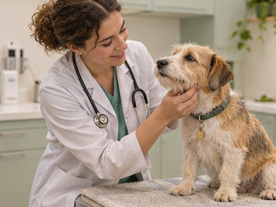
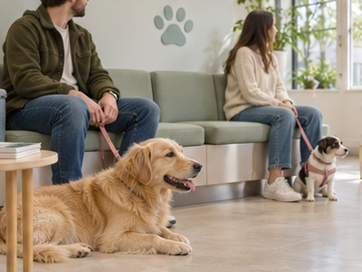
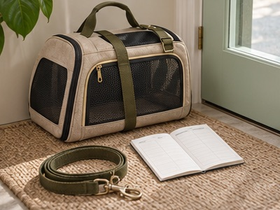

Ветеринарная клиника
Клиника в фотографиях
Приём, зона ожидания и кабинет диагностики. Изображения иллюстрируют сценарии посещения.


Кабинет врача
Зона приёма для разговора с владельцем и осмотра питомца.


Визит с кошкой
В форме можно выбрать кошку, собаку или другого питомца.

Кабинет диагностики
Диагностические визиты проходят по отдельной записи.


Плановый осмотр собаки
В начале визита владелец рассказывает о причине обращения и отвечает на вопросы врача.


Зона ожидания
В карточке организации можно уточнить, где лучше дождаться начала приёма.


Что взять на визит
Поводок или переноска и документы питомца. Конкретный список уточните у администратора.
Фотореалистичные иллюстрации созданы для портфолио.
Записаться планово
Выберите цель визита, подготовьтесь к приёму и проверьте контакты клиники.